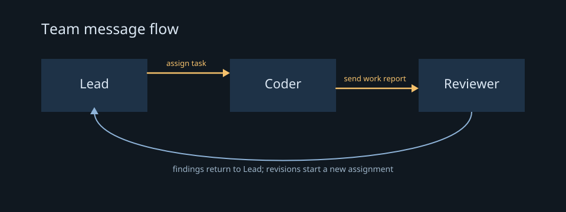

A small multi-agent workflow
This example makes the handoffs explicit: Lead assigns one bounded task to Coder, Coder reports what changed, and Reviewer checks that report. Lead receives the review result and can decide whether to ask Coder for a revision. The teamfile aliases used below are Lead, Coder, and Reviewer.
The diagram shows the message path. The arrow from Reviewer back to Lead is the review report; any requested revision is a new Lead-to-Coder prompt. The lmdraw getting-started guide explains the drawing host used to create the diagram.

The sample is offline by default. Run with --live TEAMFILE only after you have prepared a teamfile containing Lead, Coder, and Reviewer members and intend to send real provider prompts.
Script: multi-agent-workflow.lms
# Preview the sequence unless --live TEAMFILE is provided.
if (ARGV.get(0, "") == "--live") {
team = ARGV.get(1, "team.lmctl");
checked = lm_lint(team);
require(checked.status == "ok", f"Teamfile is invalid: {checked.error}");
seeded = lm_seed(team);
require(seeded.status == "ok", f"Could not seed team: {seeded.error}");
task = lm_prompt(team, "Lead", "Assign Coder a small task. Return the exact task in one short paragraph.");
require(task.status == "ok", f"Lead assignment failed: {task.error}");
work = lm_prompt(team, "Coder", f"Complete this task and report changed files: {task.reply}");
require(work.status == "ok", f"Coder failed: {work.error}");
review = lm_prompt(team, "Reviewer", f"Review the Coder's report and changes. Report findings and whether revisions are needed: {work.reply}");
require(review.status == "ok", f"Review failed: {review.error}");
handoff = lm_prompt(team, "Lead", f"Summarize the review and decide the next step: {review.reply}");
require(handoff.status == "ok", f"Lead handoff failed: {handoff.error}");
println(handoff.reply);
} else {
println("Preview only. Live order: Lead assigns, Coder works, Reviewer reviews, Lead decides.");
}
Run it
lmscript examples/multi-agent-workflow.lms
lmscript examples/multi-agent-workflow.lms --live TEAMFILEPreview output
Preview only. Live order: Lead assigns, Coder works, Reviewer reviews, Lead decides.
Each lm_prompt waits for a reply and returns a status plus reply text. The require calls stop the workflow at the first failed handoff, so later prompts do not run with a missing assignment or work report. Session creation and prompt calls are real provider activity in live mode.
Previous: Writing a team automation · Next: Writing an autorun script
Try it: download examples/multi-agent-workflow.lms, then run the offline command above. For a live run, replace TEAMFILE with your prepared teamfile path.